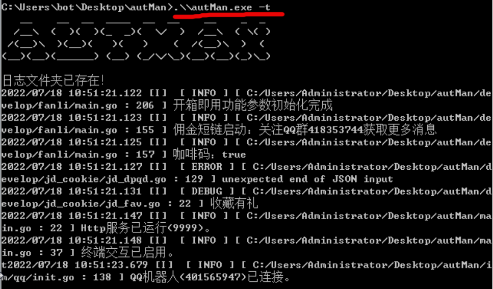

本页面目录
安装完成并启动后可进入autMan后台地址：http://autMan的ip:autMan端口/fanli/static
获取后台地址的指令：设置
1.Linux类系统
centos、ubuntu、debian系统一定要安装在/root/autMan目录
稳定版：
s=autMan;f=fanli;a=arm64;if [[ $(uname -a | grep "x86_64") != "" ]];then a=amd64;fi ;if [ ! -d $s ];then mkdir $s;fi ;cd $s;wget https://github.com/hdbjlizhe/${f}/releases/download/main/autMan_$a.tar.gz && tar -zxvf autMan_$a.tar.gz && rm -rf autMan_$a.tar.gz && chmod 777 $s;pkill -9 $s;$(pwd)/$s -t;
尝鲜版：
s=autMan;f=fanli;a=arm64;if [[ $(uname -a | grep "x86_64") != "" ]];then a=amd64;fi ;if [ ! -d $s ];then mkdir $s;fi ;cd $s;wget https://github.com/hdbjlizhe/${f}/releases/download/debug/autMan_$a.tar.gz && tar -zxvf autMan_$a.tar.gz && rm -rf autMan_$a.tar.gz && chmod 777 $s;pkill -9 $s;$(pwd)/$s -t;
autMan(Linux系统含amd64\arm64)运行：
1.进入autMan文件夹：cd /root/autMan
2.指令启动：./autMan -t
3. 静默指令：重启
2.Windows系统
下载解压后直接运行exe文件
稳定版
https://github.com/hdbjlizhe/fanli/releases/download/main/autMan_win.tar.gz
尝鲜版
https://github.com/hdbjlizhe/fanli/releases/download/debug/autMan_win.tar.gz
1.启动windows命令提示符或powershell等命令行工具
2.进入autMan文件夹
3.指令启动：.\\autMan.exe -t
4.
静默指令：重启
autMan(Windows版本)运行：
3.稳定版和尝鲜版
稳定版->尝鲜版
1.指令：set autMan taste true
2.指令：更新
或者用指令：更新尝鲜版
尝鲜版->稳定版
1.指令：set autMan taste false
2.指令：更新
或者用指令：更新稳定版
示例：
4.后台登录
安装完成并启动后可进入autMan后台地址：http://autMan的ip:autMan端口/fanli/static
首次使用需要设置登录密码,设置完成后跳转到登录页面，输入密码登录成功
示例：